Week 3
Today we going to study the electronics area, Mr. Francisco give a basic thinks and basic idea for electrician. What is electrician ?
Where we use electrician ?.
Basic electronics
switch

A switch responds to an external force to mechanically change an electric signal. Switches are used to turn electric circuits ON and OFF and to switch electric circuits. Basically what this means is that when you push down or flick a switch you are allowing current to flow through to the rest of the circuit.
We have many different kinds of switches the most common are Toggle Switch, Push button Switch, Selector SwitchDiodes
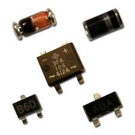
A Diode is the simplest two-terminal unilateral semiconductor device. It allows current to flow only in one direction and blocks the current that flows in the opposite direction. The two terminals of the diode are called as anode and cathode. The characteristics of a diode closely match to that of a switch. An ideal switch when open does not conduct current in either directions and in closed state conducts in both directions
There are many different types of diodes the most common are: Zener Diode: The Zener Diode allows current in reverse direction when the applied voltage reaches the breakdown voltage. (Based of principle of zener breakdown.)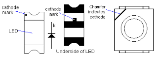
Light Emitting Diode: The LED converts current into light. This type of diode is especially popular and is most commonly found in small electronics stop street lights and we may even see it finding its way into house lighting being cheaper and more Eco friendly.Resistor

capacitor
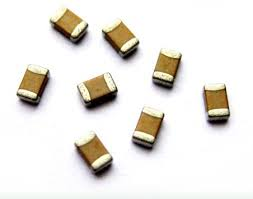
A capacitor is a two-terminal, component used to temporarily store a charge in an electric feild. This is use full in Electrical Engineering because it can be used to smooth out varying DC supplies aswell as filtering circuits (high pass, low pass or band pass) they are even used as temporary batteries.
The most common types of capacitors you will find are: Supercap: Also known as a ultracapacitor, as the name implies these capacitors have very large amounts of capacitance. Elecrtrolytic Capacitor: These are a type of capacitor that are polarised (they can only work in one direction) these are able to offer high capacitance values mostly above 1 μF. these are mostly used for low friquency applications Ceramic Capacitor: Is a type of capacitor are that can store a charge anywhere from a picofarad to around 0.1 microfarad.Transistors

Potentiometer
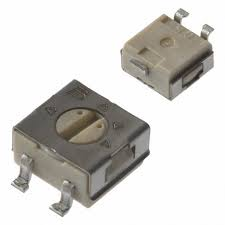
A Potentiometer is a knob that has variable resistance which can result in the dimming of your lights or even sending information back to your micro controller this component normally has 3 poles also called a 3 pole resistor it works in the same way as a voltage divider except for the fact that this has variable outputs. You will often find these in house holds or sound controllers.Motors
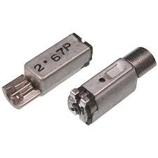
Motors is a device that converts direct current into mechanical power. They rely on the forces produced by magnetic fields. It does this by having a coil of wire with a current running through it generates an electromagnetic field. The direction and magnitude of the magnetic field produced by the coil can be changed with the direction and magnitude of the current flowing through it. The most common types of motors are DC motors : This Motors simply starts spinning if you give it DC connection the speed and direction all depends on the arrangement of the positive and negative poles as well as the amount of current you put through it. Servo Motors: These motors are awesome because they can turn to any specific location within 660 or 180 depending on the servo we have . Stepper Motors: The main difference between them and all the other motors, is the way they revolve. Unlike other motors, stepper motors does not continuously rotate Instead, they rotate in steps . Each step is a fraction of a full circle. This fraction depends mostly from the mechanical parts of the motor, and from the driving method.PCB Fabrication
We started to downloading the Electronic Production assignment file form Fab academy 2015 archives. We chose to mill the HelloISO board designed by Neil. Opened it in Antimony got the Trace .png and Outline .png. The next step is to open Fab Modules and give .png as the input format, select modella as the machine. Then load the traces .png file and then make path. Leave the settings as default.type:
"fab" - Enter
Select the i/p format (.png file)
Select the o/p process (Roland MDX-20 mill(.rml))
Select the workflow (make_png_rml)

click the "load.png" button and select our project work(.png).
click the "make.path" button and view type select "segments"
click the "make.rml" button and the project job send it to the PCB Milling machine.
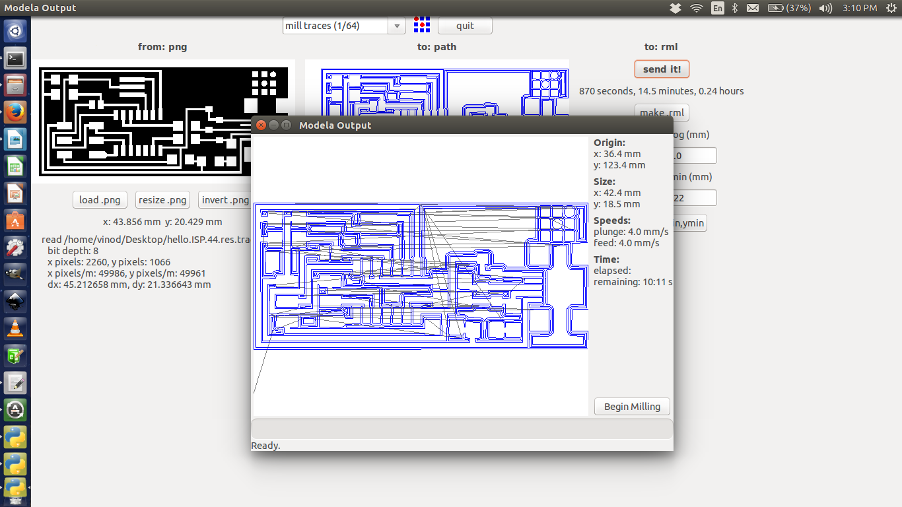
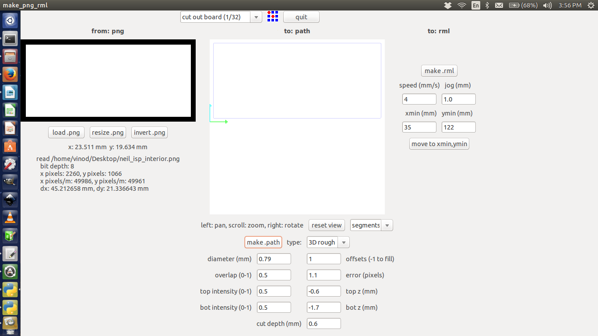
select top first "mill traces(1/32)"click the "load.png" button and select our project work(.png).
click the "make.path" button and view type select "segments"
click the "make.rml" button and the project job send it to the PCB Milling machine.

Now move onto the machine, Switch it on. Change the bit carefully to 1/64 for milling the traces. Using the Fab Module move the head to the point where you want the origin to be. Then correct the height of the bit. We want to have it just touching the surface. Now in the Fab Modules give make .rml command and then send it to modella. Wait till the work is done. After cutting the traces change the bit to 1/32 and repeat the process using Fab Modules using cut board .png fil. This will make a cut around our circuit so that we can remove it from the larger board.
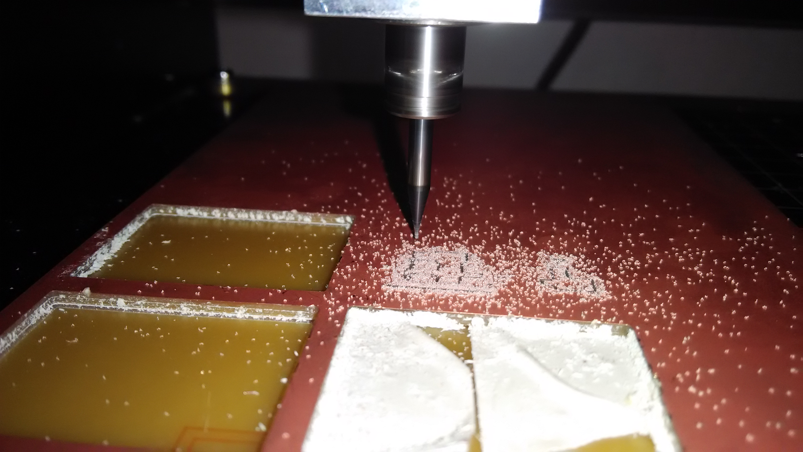
Now as we have the board, it’s time to start soldering the components to it. As a good practice, Mr.Francisco told all to write down the components in a paper or book and draw a box corresponding to each component. Then we took the components and placed them in their corresponding boxes. This way we won’t mix up anything and it's easy to solder as the components are kept handy.
The final product is like: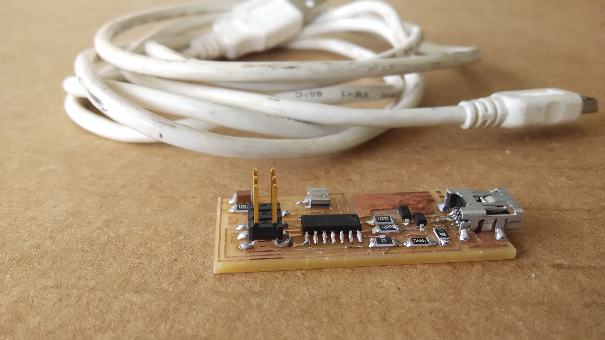
After soldering we have to check under the magnifier if the connections are proper and if time allows, do a continuity check too. Programming the BoardThe prerequisites for programming your board are
1.Latest version of avrdude in our PC
2.A mini USB cable
3.firmware of the board
When you have all the above try to flash the Firmware into the board.
The steps to be followed are
download and extract the firmware
open a terminal over there and give the following commands
make clean
make hex : If we are using an Atmelice isp make that change in the makefile [change to atmelice_isp]. If ywe are using USBtiny then change to that.
sudo make fuse : its run Successfully.
sudo make program .
last our board should be programmed to work as an ISP.
The soldering jumper should be removed after flashing the firmware.

Day 11 (03.11.2015)
Today we going to study the Kokopelli, Mr. Francisco toled that in MIT all PCB designer are use Kokopelli software. It is more power full and safe. We design a circuit in Kokopelli software, that file to easily modified by other designer in the world. So we start working with Kokopelli. First we take a circuit from fab Academy site and download the circuit .cad file, that cad file open with Kokopelli.

Add three extra component in to the circuit, like(LED,Resistor and button switch).The programs are shown the figure
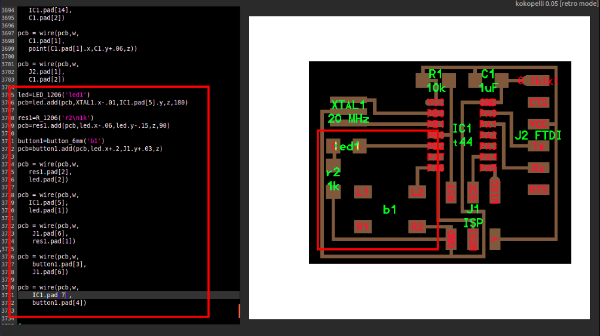
After finishing the design we save the file to .png and that file give to the PCB milling machine .
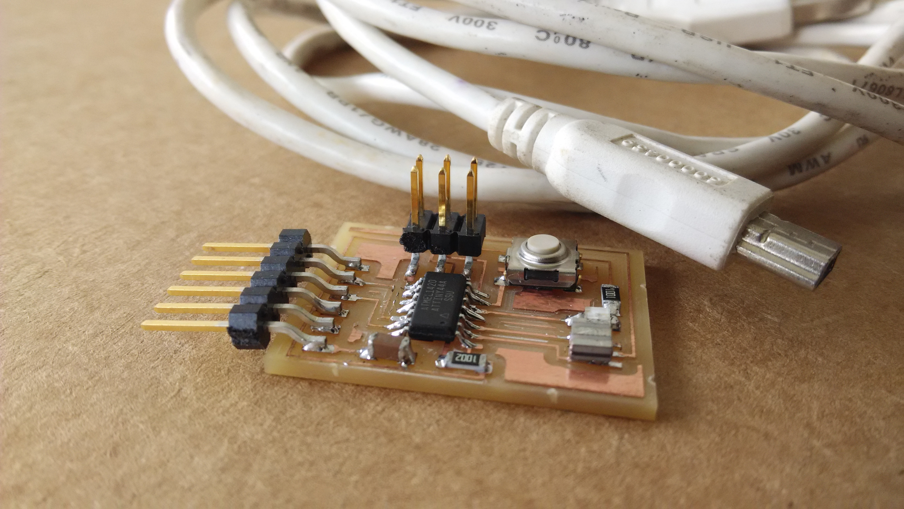
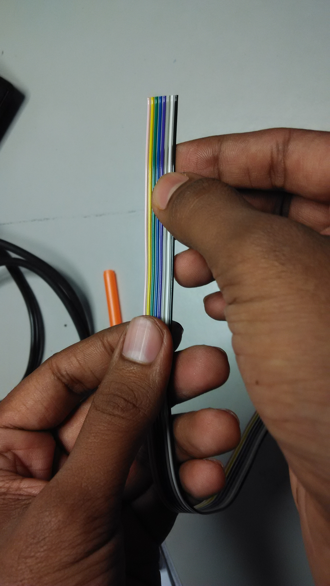

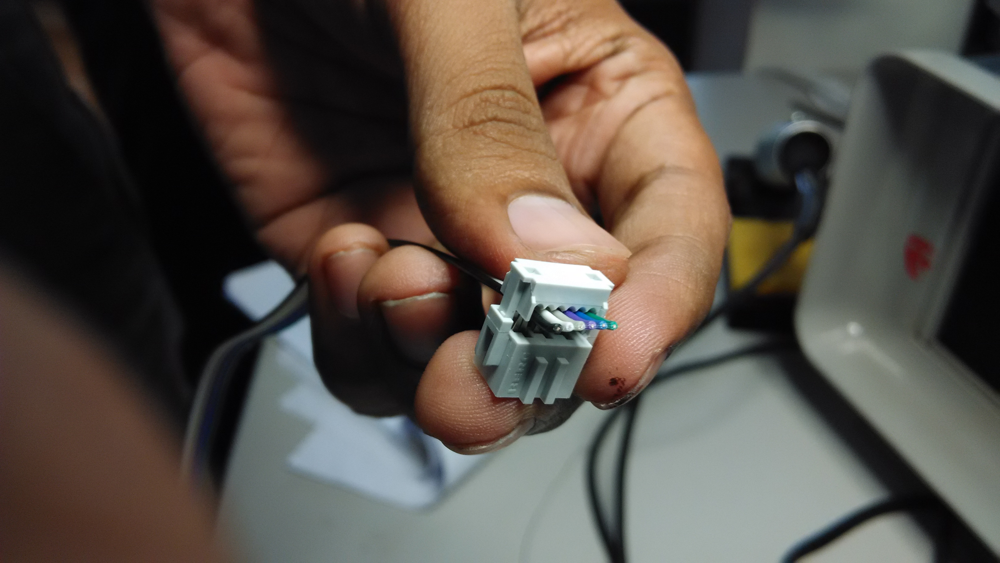

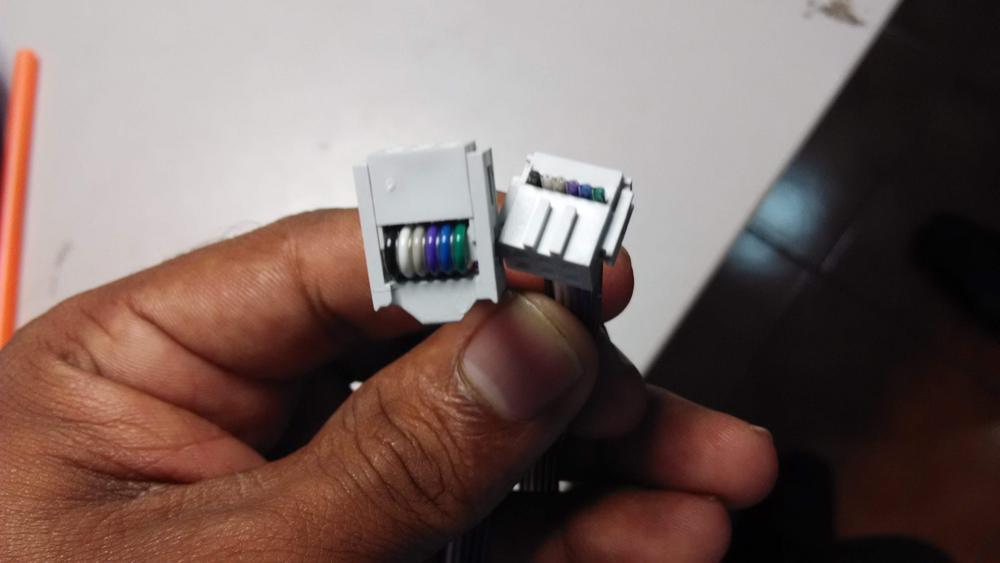


Day 12 (04.11.2015)
Day 13 (05.11.2015)
Video Conferencing
Its very important to have a video conferencing facility in every FAB labs. It would be the window that connects to the rest of the labs and MIT. So setuped our lab conference facility using a combination of Ekiga and a stable internet connection. Franc also explained how the communications will be done during fab academy course, how to use the mcu.cba.mit.edu and how to navigate aroud the channel etc. We did a test conference with Fab Lab Barcelona to check the connections and to give us a feel of how it is.The FAB Lab 1 Internet connection is 1 mbps(1:1), it dedicated to video colling facility I too installed Ekiga,tried to connect to mcuc.cba.mit.edu it's work properly
ShopBot
Mr.Franc toled the ShopBot PRSalpha tools are our toughest, most sophisticated, gantry-based CNC routers. Using advanced technology for CNC cutting, drilling, carving and machining, the PRSalpha series tools deliver rapid transit speeds of 1800 inches per minute and cutting speeds of up to 600 inches per minute. Easy to configure and re-configure,learn and use, the PRSalpha CNC delivers affordable, full-production performance in digital fabrication of wood, plastic, aluminum, and other materials. our shopbot bead is 8feetx4feet. next we discussed about the design parameteres and how to install the 2D works software using wine. there were no problems durinf installation. Franc also made some 2D desing that design to share to our DropBox account .